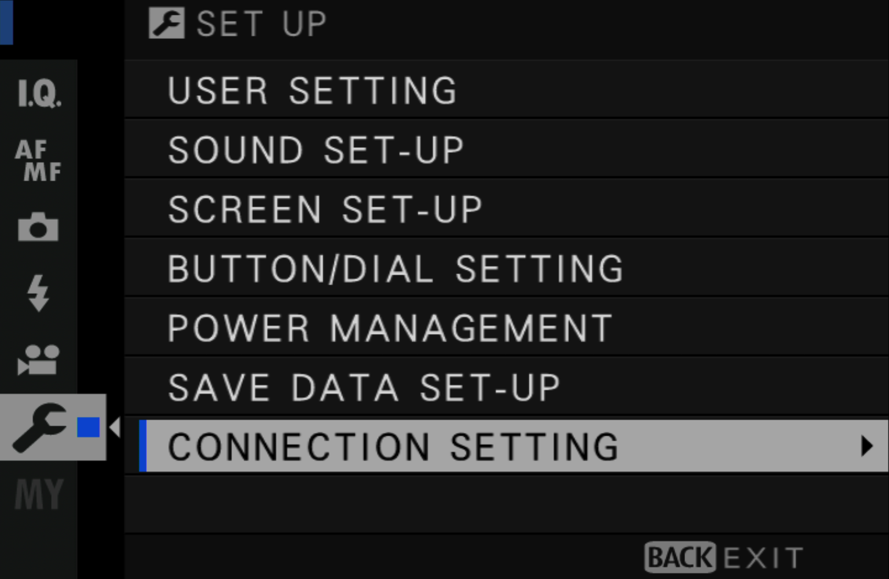

Before We Start
- Make sure your camera is supported by Cascable.
- Check that your camera's firmware is up-to-date.
- Check that Cascable is up-to-date.
An Important Note For Cameras With Bluetooth
For newer Fujifilm cameras that have Bluetooth (such as the X-T30), it's important to note that Cascable communicates with your camera via WiFi, NOT Bluetooth. Start WiFi using the WIRELESS COMMUNICATION menu option on your camera as described later in this guide, or bind a physical button to this function.
Disabling Image Resizing On Your Camera
By default, Fujifilm cameras will resize all of your photos down to 3 megapixels before they're copied over WiFi. For best results with Cascable, we recommend that this setting be disabled.
- To disable this setting, on your camera push MENU and navigate to SET-UP, and choose CONNECTION SETTING.

- Next choose WIRELESS SETTINGS (or GENERAL SETTINGS on newer models) and change the RESIZE IMAGE FOR SMARTPHONE setting to OFF.
If Connection Attempts Fail
If you've used your Fujifilm camera over WiFi using other apps, connection attempts from Cascable can be rejected. To solve this, when enabling WiFi on your camera press the OK - CHANGE button to set up a new pairing. Relaunch Cascable, and the connection should then succeed.
Connecting Cascable to Your WiFi-Enabled Camera
- Press the Menu button on your camera and navigate to SHOOTING MENU section.
- In the SHOOTING MENU section, navigate to WIRELESS COMMUNICATION and press the OK button.
- Note: Many Fujifilm cameras have a dedicated WiFi button, or will allow you to configure a function button to enable WiFi. Consult your camera's manual for more information.
- WiFi will now be enabled. Now, ensure your iOS device is connected to the same network as your camera, then launch Cascable.
- If Cascable is set to connect automatically, the app should find the camera after a few moments and connect to it. If not, tap the Connection Indicator at the top of the screen, then tap Connect next to the name of your camera.
- For the first connection, your camera needs to be paired with the connecting app. If this is the case, Cascable will show this dialog:
- To continue, look at your camera and press OK to confirm the pairing request from Cascable.
- That’s it — you’re connected!
Still Stuck?
If you're still stuck, head over to the Cascable Website and we'll help you out.